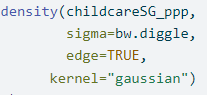
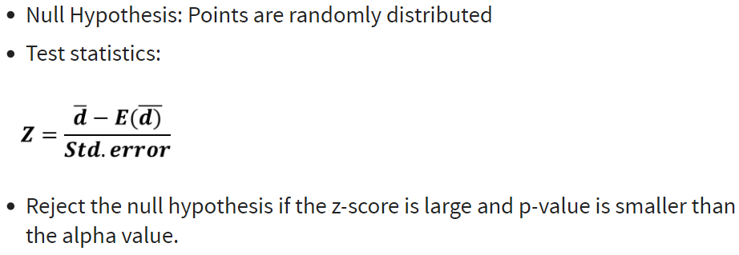
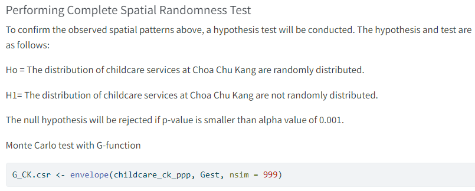

Notes 3
Spatial Point Patterns Analysis
Purpose of Geospatial Analytics
So that we can quantitatively derive it (eg. using KDE).
Uses data related to locations to find patterns & trends
Spatial Point Patterns
To study how points (Event) are spread out over an area
Only map Events, no ‘Non-Event’
The mapped pattern should not be:
selection bias
Not a sample (eg. It is ok to take aged 70-80 from the population. But do not do random sampling out of this group)
Example:


Real-world spatial point patterns -Random OR Patterned?
hard to have random distribution
eg. Some areas like the airport will never have childcare
We can use 2nd Order Spatial Point Pattern Analysis to prove
hard to find something uniform in real world
- eg. For instance a desert, if you zoom out a bit, there could be small hills, different land. It would not be the same across such as flat land
Before performing any spatial analysis, exclude areas that is definitely dont have the occurence. [Else, when generate the spatial random data, you might have childcare center there]

Spatial Point Patterns Analysis
usually in 2D space
set X = {x ∈ D}, D = study region, subset of Rn, a n-dimensional Euclidean space
Issue: We need infer if the given is merely random or result of some process:

1st-order VS 2nd-order Analysis
| 1st Order | 2nd Order | |
|---|---|---|
examines how the number of points (events) changes over space, often influenced by external factors such as environmental conditions, socioeconomic factors, or other large-scale trends. Example: “Where are the points more or less dense?” “How does the density of events vary across the study area? |
Example: “Are the points clustered, dispersed, or randomly distributed in relation to each other?” “How does the pattern change with distance?” |
|
| Technique | Density-based:
Distance-based:
|
|
1st-order[Kernel Density Estimation (KDE)]
- used to estimate the probability density function of a random variable.


Steps in KDE
- Place a Kernel on Each Point (event location)
- The height and shape of this bump depend on the chosen kernel function and the bandwidth.
- Sum the Kernels
- For each point in the study area, the contribution of all surrounding kernels is summed to calculate the density value at that point.
- Create a Continuous Surface
- The result is a smooth surface where higher values indicate areas with higher event densities, and lower values indicate areas with fewer events.
KDE Methods

Uniform -> intensity will not change during this period, immediately after, it will be 0
Triangular -> move away from center point, it will decrease very fast from the center point
Quartic & Gaussian ->
not identical, but similar. If get negative value from Gaussian, can switch to Quartic.
Gaussian is very common (Gives more weight to points closer to the event & less weight to points farther away)
Try different option, select the appropriate one & explain why
KDE Bandwidth
Fixed Bandwidth -determine distance for you
|
 |
|
 |
* Small bandwidth = highly localized estimate, showing fine details (but could miss broader patterns)
* Large bandwidth = smooth out the estimart (possibly oversimplifying the data)
* Automatic bandwidth -> bw.diggle()

1st-order [Quadrat Analysis]
Steps
|
 |
|
 |
|
 |
|
 |
Uniform distribution -> variance-mean ratio = 0
Random distribution -> variance-mean ratio close to 1
Cluster distribution -> variance-mean ratio greater than 1
Interpretation

Weaknesses
sensitive to the quadrat size
If too small, they may contain only a couple of points, and
If too large, they may contain too many points.
It is a measure of dispersion rather than a measure of pattern.
- It results in a single measure for the entire distribution, so variation within the region are not recognised.
Complete Spatial Randomness CSR
satisfy 2 conditions
any event has equal probability of being in any location, a 1st order effect
The location of one event is independent of the location of another event, a 2nd order effect.
1st-order [Distance-based: Nearest Neighbour Index]
Direct distance from a point to its nearest neighbour
Index < 1: clustering
Index = 1: random
Index > 1: dispersion

Example:


p-value is < 0.05, so reject null hypo that the point patterns are randomly distributed
2nd-order [G function]

within this radius, how many childcare i found
Within 0-9, what is the intensity
Clustered: If G increases rapidly at short distance
Evenness: If G increases slowly up to distance where most events spaced, then increases rapidly
Monte Carlo simulation test of CSR

nsim = 999 <- Performed 999 simulations [Cannot do 1 only, the more = more stable, result will converge]
for each simulated point pattern, estimate G(r) & use the max 95th and min 5th of these functions for the simulated patterns to define an upper and lower simulation envelope.
Estimate G(r) is statistically significant if estimated G(r) lies above the upper envelope or below the lower envelope

2nd-order [F function]
Select a sample of point locations anywhere in the study region at random
- Determine min distance from each point to any event in the study area.

Clustered = F(r) rises slowly at first, but more rapidly at longer distances.
- Evenness = F(r) rises rapidly at first, then slowly at longer distances.

Comparison between F and G function

2nd-order [K function]
Limitation of nearest neighbor distance method is that it uses only nearest distance
Considers only the shortest scales of variation.
K function uses more points.
Provides an estimate of spatial dependence over a wider range of scales.
Based on all the distances between events in the study area.
Assumes isotropy over the region.

Calculating K function
Construct a circle of radius h around each point event(i).
Count the number of other events (j) that fall inside this circle.
Repeat these two steps for all points (i) and sum results.
Increment h by a small amount and repeat the calculation.

Significant cluster pattern -> above envelop
Significant regular pattern -> below envelop
CSR -> inside envelop
2nd-order [L function]
- K function will be normalised to obtained a benchmark of zero.
When an observed L value is greater than its corresponding L(theo)(i.e. red break line) value for a particular distance and above the upper confidence envelop, spatial clustering for that distance is statistically significant (e.g. distance beyond C).
When an observed L value is greater than its corresponding L(theo) value for a particular distance and lower than the upper confidence envelop, spatial clustering for that distance is statistically NOT significant (e.g. distance between B and C).
When an observed L value is smaller than its corresponding L(theo) value for a particular distance and beyond the lower confidence envelop, spatial dispersion for that distance is statistically significant. - When an observed L value is smaller than its corresponding L(theo) value for a particular distance and within the lower confidence envelop, spatial dispersion for that distance is statistically NOT significant (e.g. distance between A and B).

L(r)>0 indicates that the observed distribution is geographically concentrated.
L(r)<0 implies dispersion.
L(r)=0 indicates complete spatial randomness (CRS).
* Anything outside of envelop, you will have enough statistical evidence, if inside means you still fall into the confidence lvl (cannot reject null, cause not enough evidence to infer)
set.seed()
to produce reproducible result
result from algo might change every run, use this to fix it